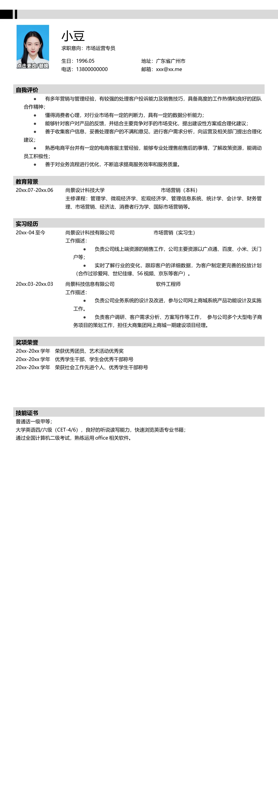

小豆
求职意向：市场运营专员
生日：1996.05
电话：13800000000
地址：广东省广州市
邮箱：xxx@xx.me
自我评价
•
有多年营销与管理经验，有较强的处理客户投诉能力及销售技巧，具备高度的工作热情和良好的团队
合作精神；
•
懂得消费者心理，对行业市场有一定的判断力，具有一定的数据分析能力；
•
能够针对客户对产品的反馈，并结合主要竞争对手的市场变化，提出建设性方案或合理化建议；
•
善于收集客户信息，妥善处理客户的不满和意见，进行客户需求分析，向运营及相关部门提出合理化
建议；
•
熟悉电商平台并有一定的电商客服主管经验，能够专业处理售前售后的事情，了解政策资源，能调动
员工积极性；
•
善于对业务流程进行优化，不断追求提高服务效率和服务质量。
教育背景
20xx.07-20xx.06
尚景设计科技大学 市场营销（本科）
主修课程：管理学、微观经济学、宏观经济学、管理信息系统、统计学、会计学、财务管
理、市场营销、经济法、消费者行为学、国际市场营销等。
实习经历
20xx-04 至今
尚景设计科技有限公司 市场营销（实习生）
工作描述：
•
负责公司线上端资源的销售工作，公司主要资源以广点通、百度、小米、沃门
户等；
•
实时了解行业的变化，跟踪客户的详细数据，为客户制定更完善的投放计划
（合作过珍爱网、世纪佳缘、56 视频、京东等客户）。
20xx.03-20xx.03
尚景科技信息有限公司 软件工程师
工作描述：
•
负责公司业务系统的设计及改进，参与公司网上商城系统产品功能设计及实施
工作。
•
负责客户调研、客户需求分析、方案写作等工作， 参与公司多个大型电子商
务项目的策划工作，担任大商集团网上商城一期建设项目经理。
奖项荣誉
20xx-20xx 学年 荣获优秀团员、艺术活动优秀奖
20xx-20xx 学年 优秀学生干部、学生会优秀干部称号
20xx-20xx 学年 荣获社会工作先进个人、优秀学生干部称号
技能证书
普通话一级甲等；
大学英语四/六级（CET-4/6），良好的听说读写能力，快速浏览英语专业书籍；
通过全国计算机二级考试，熟练运用office 相关软件。